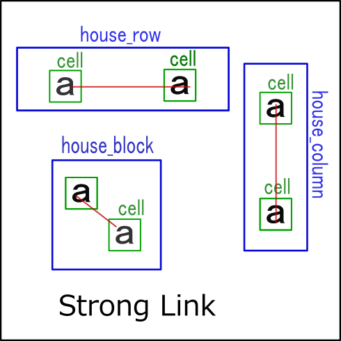
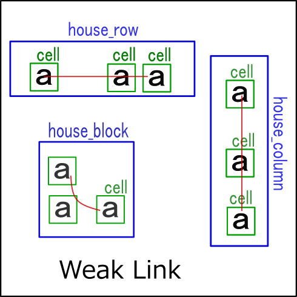
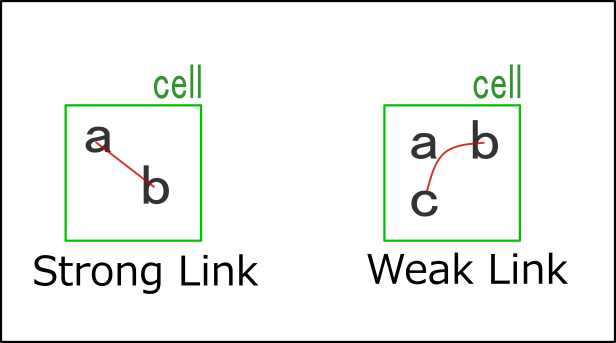
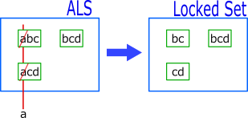
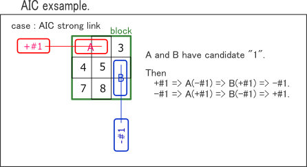
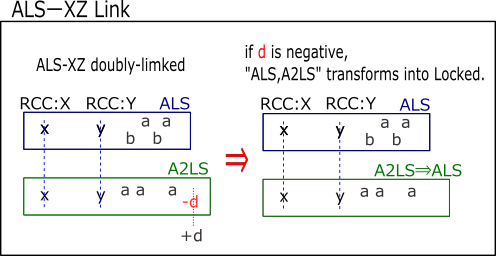
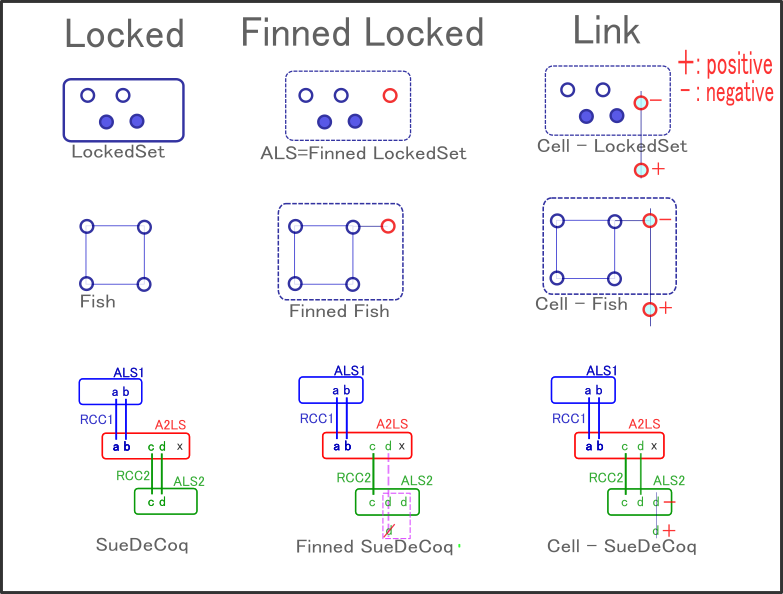

Link
Links are the basis for various Sudoku parsing algorithms.
Assemble a network-type algorithm using the links defined here.
It is a "simplified expression" that prioritizes overall ease of understanding and places accuracy second.
i look forward to your warm feelings, kind eyes, and understanding.
(1) Intercell link
The simplest link is an intercell link.
There are two types of intercell links: strong links and weak links.
- A strong link is a state in which there are two cells with the target digit "a" in one house. The image below on the left shows strong links in the House of rows, columns, and blocks. A strong link propagates "a" or "not a" for one cell to the other cell.
- A weak link is a state in which there are three or more cells with the target digit "a" in one house. The image below on the right shows weak links in the House of rows, columns, and blocks. With weak links, if one cell is "a", the remaining cells are propagated as "not a". Strong links are also weak links.
 
(2) Intracell link
Intracell link are also one of the simplest types of links.
Intracell link are digits link in one cell.
If the number of elements is 2,it is a strong link,
and if the number of elements is 3 or more, it is a weak link.

(3) ALS Link
ALS is one more digit than LokedSet. When one element digit of ALS is determined negatively by a link, ALS changes to LockedSet. In other words, the external element and ALS form a weak link.

(4) AIC Link
For cell groups,
constraints are transmitted from the direction in which the cell arrangement is extended (House),
and constraints are transmitted in the direction in which the cell arrangement is extended.
If cell group B of the link is a single cell, constraints are transmitted in multiple directions(multiple Houses).

(4) ALS_XZ link
ALS_XZ link was developed experimentally as a first attempt to explore various links.
ALS_XZ is a state in which two ALS are connected by RCC.
ALS_XZ doubly_linked is a case where there are two RCCs, which are Locked.
In other words, the pair A2LS,ALS with two RCCs becomes a link.

Note that A2LS is a group of cells in House, and there are (n+2) candidate digits in n cells.In GNPX ver5, AnLS is defined as a base class and ALS is defined as a derived class.
Finned
In Sudoku solving, cells with fins often appear.
For example, Finned LockedSet, Finned Fish, Finned ALS(A2ls), Finned ALS-XZ singly linked(n=1 SueDeCoqEx).
For finned cells, as follows.
- Finned "Locked" becomes a link.
- Strong/Week link between cells is "Finned cell".
